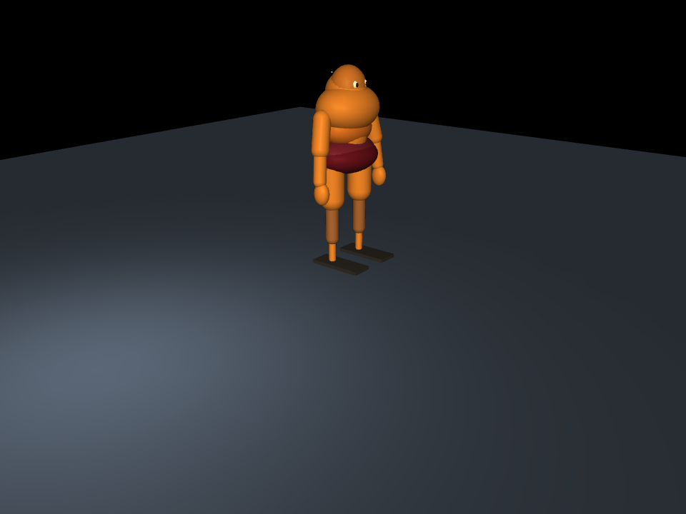

Robot model
28 DoF · 25 kg
MuJoCo model compiles to 35 generalized coordinates, 34 velocities, and 28 actuators. 25 kg is an explicit design allocation, not a measured robot mass.
A runnable 3D simulation foundation, traceable joint/mass assumptions, real PPO training, and local visualization. The system is still a provisional design study; no physical prototype measurements exist yet.
MuJoCo model compiles to 35 generalized coordinates, 34 velocities, and 28 actuators. 25 kg is an explicit design allocation, not a measured robot mass.
The neutral MJCF joint anchors, axes, limits, and 25 kg mass case are checked against the simulation configuration copied from the CAD reference.
Standing is the only implemented task, and the latest PPO checkpoint failed the matched baseline comparison. Walking and whole-body actions remain future tasks.
design/cad/body-layout-v2.jsonPackaging, frames, placeholder mass ledger, sensor reservationssrc/robot_twin/robot_config.jsonJoint groups, frame contract, simulation and randomization settingssrc/robot_twin/models/humanoid_28dof.xmlCollision shapes, link inertias, finite-gain actuators, cameras/sitesenv.py → train.py → evaluate.pyGymnasium task, PPO run, fixed-condition matrix, matched baseline, and replay artifactCAD and MJCF remain separate authoring files today, with a validator detecting drift. A later step should generate both from one parametric robot description. Appearance geometry, collision proxies, and mass/inertia are deliberately separate concepts; the current shell panels and collision primitives are not supplier-ready parts.

Editable/inspectable CAD artifacts:
The task gives the policy gravity direction, base motion, joint positions/velocities, and prior action. PPO outputs normalized joint-position targets; MuJoCo applies finite-gain actuators with torque saturation. Episode resets vary total mass, link mass redistribution, ground friction, equivalent slope gravity, and contact softness.
The local dashboard shows a real MuJoCo frame, training step/reward, robot state, domain parameters, and joint angles. Completed evaluation writes the same run’s MP4 and per-surface JSON.
Open live run monitor (while the local trainer/server is active)A four-stage run trained about 150k PPO transitions over a physics-based ankle stabilizer. At residual amplitude 0.05, a three-seed evaluation paired residual PPO, ankle PD, and neutral hold across six surfaces and three synthetic total-mass scales. Residual PPO and PD each completed 48/54 full 8 s episodes, with mean survival of 7.29 s. PPO matches the stabilizing controller here; it has not improved on it. Neutral hold completed 15/54.
| Mass scale | Neutral hold | Ankle PD | Residual PPO |
|---|---|---|---|
| 0.8× · 20 kg placeholder case | 15/18 · 6.97 s mean | 18/18 · 8.00 s mean | 18/18 · 8.00 s mean |
| 1.0× · 25 kg placeholder case | 0/18 · 3.73 s mean | 15/18 · 6.96 s mean | 15/18 · 6.96 s mean |
| 1.2× · 30 kg placeholder case | 0/18 · 2.90 s mean | 15/18 · 6.91 s mean | 15/18 · 6.92 s mean |
There are three reset seeds per surface/mass condition. These remain synthetic-mass simulation trials, not calibrated hardware tests or a broad robustness guarantee. The four-stage training chain, exact MJCF/config, manifests, full 162-episode JSON, and final checkpoint are archived under the results guide.
The initial 100,096-step PPO policy issued full joint targets directly and fell in all 18 one-seed surface/mass cases. Adding the ankle-PD base controller and limiting PPO to a small residual corrected this failure mode. Both earlier and later runs remain available for comparison.
100,096 PPO steps at 100 Hz were followed by 18 rollouts across six contact profiles and three seeded starts per profile. It fell in every rollout after 1.66–1.86 seconds. This earlier run is retained separately because it used the initial randomization schedule and a different control rate.
Open PowerShell at the repository root:
$env:PYTHONPATH = "src"
.\.venv\Scripts\python.exe -m robot_twin.train --steps 100000 --run-dir runs\my-run --device cpu --control-mode ankle_pd_residual --residual-scale 0.05 --torch-threads 2
In a second terminal, serve the live dashboard:
.\.venv\Scripts\python.exe -m robot_twin.monitor --run-dir runs\my-run
When the checkpoint is saved, record the surface suite:
.\.venv\Scripts\python.exe -m robot_twin.evaluate --model runs\my-run\policy.zip --output runs\my-run\surfaces.mp4
inertial sets its mass/COM/inertia, geom sets collision or appearance, joint sets an axis/limit, and position sets a finite-gain actuator.This order makes it easier to separate geometry, Newtonian dynamics, control, and the learning objective before tuning any reward or network setting.
| Open source work | What we borrow or defer |
|---|---|
| MuJoCo / MuJoCo Playground | Inspectable MJCF as model source, explicit tasks, replayable evaluation; GPU MJX/MuJoCo Warp is a later throughput option. |
| Isaac Lab / Newton | Backend seams for batched GPU training, high-quality camera/contact simulation, and ROS 2 once the local model and hardware data justify the larger stack. |
| Legged Gym | Actuator modeling and randomization of mass, friction, observations, and pushes; our domains stay modest placeholders until component identification exists. |
| ASAP (humanoid sim-to-real alignment) | Randomization does not make a digital twin: measure actuator response, COM/inertias, contact, and hardware tracking error before transfer claims. |
| LeRobot | Future synchronized state/action/video datasets and demonstrations for motion imitation or sensor-policy training. |
For detailed assumptions and evidence, see the architecture note, the runbook, and the phase plan.